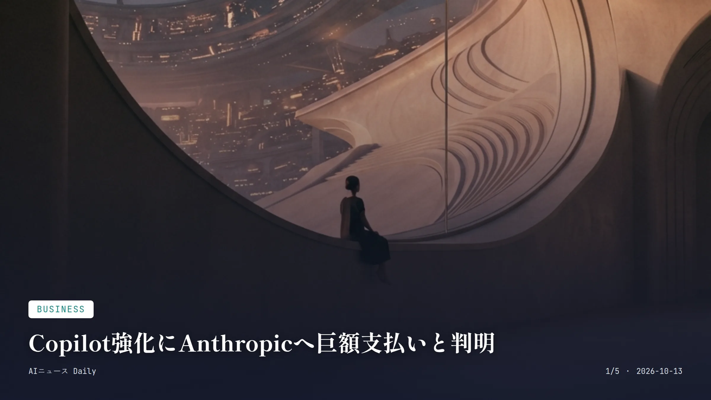
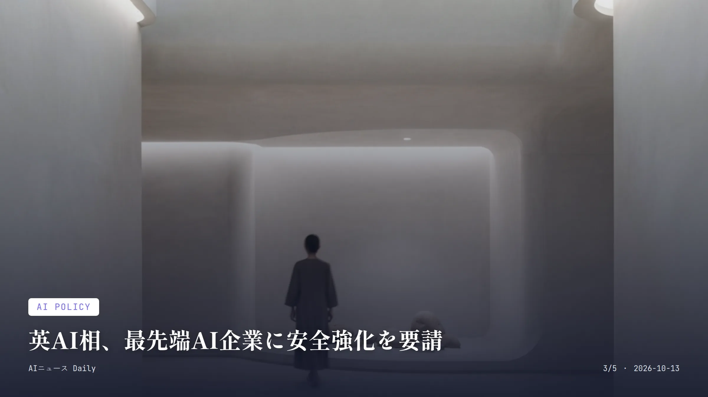
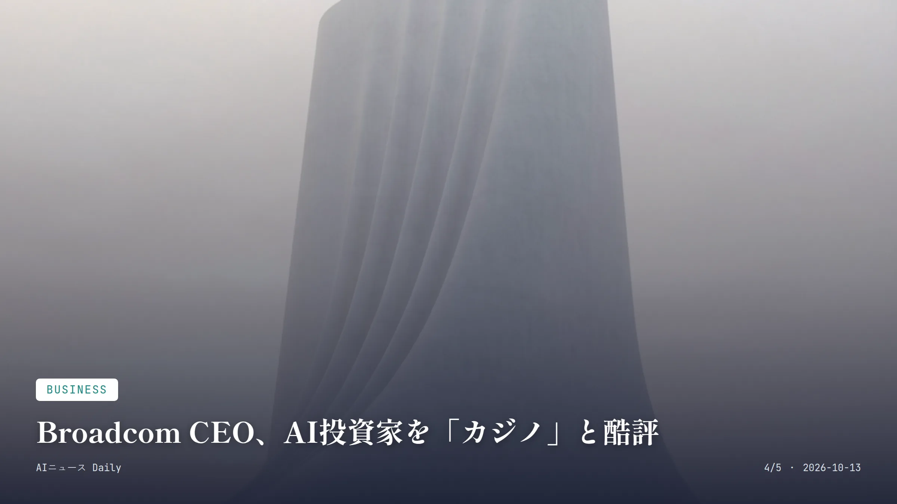
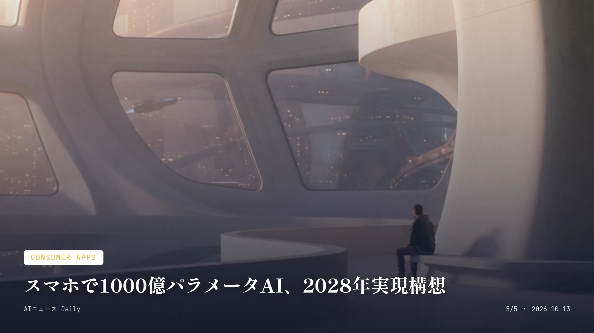

本サイトはアフィリエイトプログラムによる収益を得ている場合があります。
本サイトはGoogle AdSense等の広告配信サービスを利用しています。

Business
約1分で読める
Copilot強化にAnthropicへ巨額支払いと判明
Office作業の精度向上へAnthropicとの統合拡大へ
20億ドル超/年Microsoftが支払う見込みの年間額
2026年10月12日The Informationが報じた日
MicrosoftがOffice 365のAIアシスタント「Copilot」のために、Anthropicへ年20億ドル超を支払う見通しだと米The Informationが報じた。
きっかけは、ExcelやPowerPointでの自動化作業について「不具合が多くて使い物にならない」という顧客からの不満だったようだ。
Office部門トップのCharles Lamanna氏が、コストがかさむのを承知でAnthropicのモデル採用を強く進言したという。今ではWord、Excel、Outlook、PowerPointの中で、ClaudeとOpenAIのモデルが併用される形になっている。
なぜ重要か
多くの日本企業でも導入が進むMicrosoft 365 Copilot、その裏側で使われるAIモデルが変われば、文書作成や表計算の精度に直接響いてくる。日本でもCopilotを使う職場は増えているし、Claudeベースの機能が日本語環境でどう展開されるのか、気になるところ。
MicrosoftAnthropicCopilotOffice
AI Policy
約1分で読める
「牛乳より緩い」とMicrosoft社長が規制強化訴え
AIの安全規制めぐりBrad Smith氏が各国に要求
2026年10月12日BBCインタビューが報じられた日
Microsoft社長のBrad Smith氏がBBCのインタビューで、今のAIは牛乳や洗濯機よりも安全規制が緩いと指摘し、各国政府に急いで安全ルールを整えるよう求めた。
具体的には、AIが暴走したときに企業が被害者へ通知する義務や、インシデント報告書の作成義務化、独立した政府評価者による事前審査、そして「緊急停止スイッチ」の導入などを提案している。
業界の自主規制を良しとするトランプ大統領の立場とは、ずいぶん対照的な姿勢だと指摘されている。
なぜ重要か
AIの安全規制をめぐっては国ごとに温度差があるなかで、業界大手のトップ自らが規制強化を訴えるのは異例だ。日本はAI関連の法整備がまだ道半ばで、国際的なルール作りの議論に今後どう関わっていくのか、問われる局面になりそうだ。
MicrosoftBrad SmithAI規制AI Safety

AI Policy
約1分で読める
英AI相、最先端AI企業に安全強化を要請
サイバー防衛強化策もあわせて発表へ
英国のAI担当閣僚Kanishka Narayan氏が10月12日、ロンドン西部での演説で、最先端のAIを開発する企業にシステムの安全確保でもっと積極的に動くよう求めると表明した。
AIの安全性評価を企業の自主判断に丸ごと委ねるわけにはいかない、というのが同氏の立場で、英国として独自にコントロールできるAI技術基盤を整える必要性も訴えている。
この演説は、AI政策が内閣級の担当に格上げされて以降、Narayan氏として初めての本格的な演説となる。
なぜ重要か
AIの安全性を『企業任せにしない』という踏み込んだ姿勢は、各国の規制論議にも波及しそうだ。日本はAIの安全性評価や事故報告に関する明確な法制度がまだ整っておらず、英国の動きが今後の制度設計のヒントになるかもしれない。
出典：
MLex／The Guardian、2026年10月12日
UKAI政策AI Safetyサイバーセキュリティ

Business
約1分で読める
Broadcom CEO、AI投資家を「カジノ」と酷評
好調な半導体需要の裏で過熱警戒の発言
500億ドルOpenAIの9月時点の年換算売上高（Tan氏が言及）
2300億ドルBroadcomが見込む2028会計年度のAI半導体売上高
半導体大手Broadcomのホック・タンCEOが10月12日、シンガポールでのイベントで、AIブームに群がる投資家の多くはカジノのギャンブラーのようだと発言した。
「多くの投資家は自分が何に投資しているのか分かっていない」とまで言い切っている。過度な期待を抱く投資家が少なくないという指摘だ。
一方で、OpenAIの年換算売上高が9月に500億ドルに達した点は前向きな材料だと認めつつ、モデル訓練コストの重さから依然として黒字化には至っていないとも付け加えた。Broadcom自身は2028会計年度にAI半導体売上高が2300億ドルに達すると見込んでいる。
なぜ重要か
AIブームを支えるチップ企業のトップ自身が投資家心理に警鐘を鳴らしたのは、AI関連株に資金を投じる個人投資家にとっても聞き流せない話だろう。日本でも半導体関連株や投資信託を通じてAIブームの恩恵を受けている人は多く、過熱への警戒感は参考になりそうだ。
BroadcomAI投資半導体バブル懸念

Consumer Apps
約1分で読める
スマホで1000億パラメータAI、2028年実現構想
Qualcomm CEOが語る「エージェント競争」の次の舞台
1000億目標とされるパラメータ数
2028年実現を目指す年
32.5億現行Gemini Nano-2のパラメータ数
Qualcommのクリスティアーノ・アモンCEOが、一部の有力AI企業からスマートフォン上で1000億パラメータ規模のAIモデルを直接動かしたいという話を持ちかけられていることを明らかにした。
目標は2028年までに、このモデルをほぼ常時起動させた状態でスマホ上で走らせること。実現すれば、クラウド頼みが前提の今のAIスマホとはかなり違う世界になる。
現在Android端末に入っているGemini Nano-2は32.5億パラメータなので、1000億パラメータはその規模をはるかに超えてくる。
なぜ重要か
将来のスマホがクラウドに頼らず高度なAIを常時動かせるようになれば、プライバシーや応答速度の面で日常のアプリ体験はかなり変わってくる。日本のキャリアやメーカーがいつこの技術を取り入れるかはまだ見えないが、数年内にスマホの買い替え基準そのものが変わりそうな予兆ではある。
QualcommスマートフォンオンデバイスAIエージェント
Media & Culture
Media & Culture
約1分で読める
Getty Images、破産申請し非公開化へ
AI画像生成の普及でストック素材事業に打撃
最大5億3300万ドルGetty家とKochが約束した新規出資額
2億7000万ドル退任対象となる無担保債の額面
画像素材大手のGetty Imagesが10月12日、主要な金融関係者との間で事業再建に合意したと発表した。プリパッケージ型のチャプター11（連邦破産法11条）手続きを申請したうえで、非公開化する方針だ。
Getty家とKoch Equity Developmentの関連会社が最大5億3300万ドルの新規出資を約束しており、再建後はこの両者がGetty Imagesを100%保有することになる。無担保債権者の83.5%は、2億7000万ドル分の既発債を退任させることに合意済みだ。
同社のiStockによるEC事業は、AI画像生成ツールの急速な普及で需要が落ち込み、混乱に見舞われていると投資家向け資料で説明されている。
なぜ重要か
画像素材ビジネスの苦境は、生成AIが既存のクリエイティブ産業の稼ぎ方を直接揺さぶっている象徴的な出来事だ。日本でも写真素材やイラスト素材を提供してきた企業にとって、AI生成画像との競合はもう無視できない経営課題になりつつある。
Getty Images生成AI著作権ストックフォト
先頭に戻る